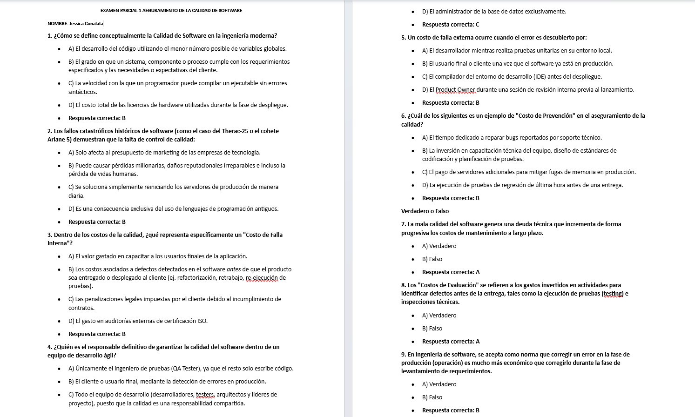
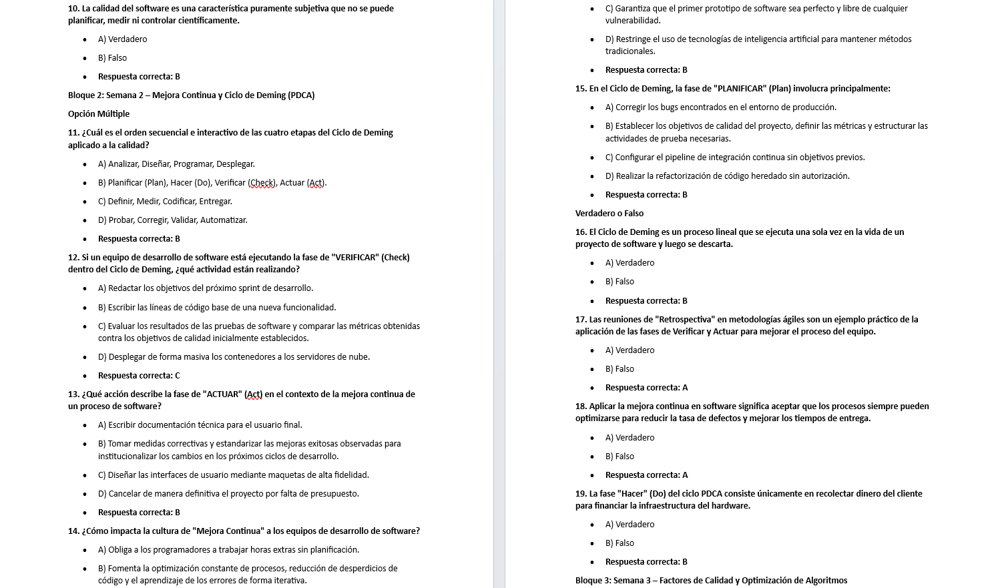
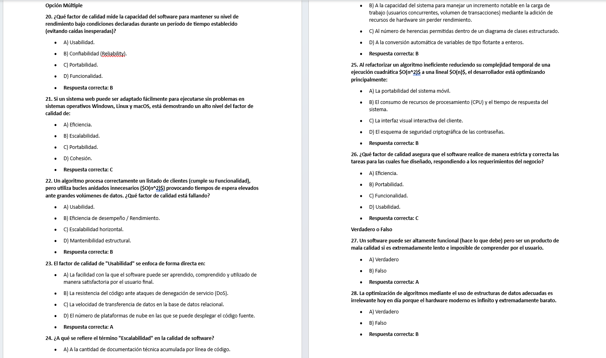
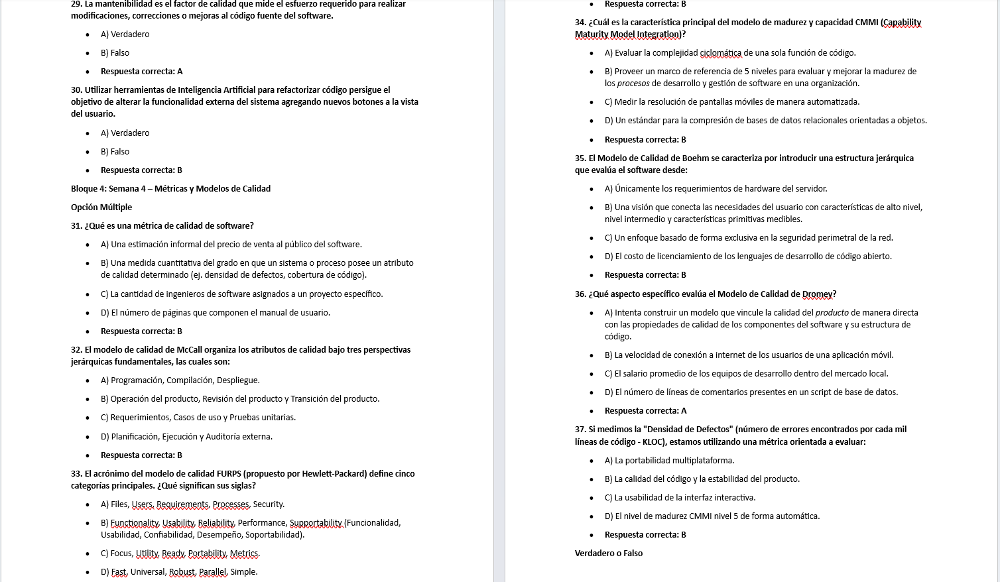
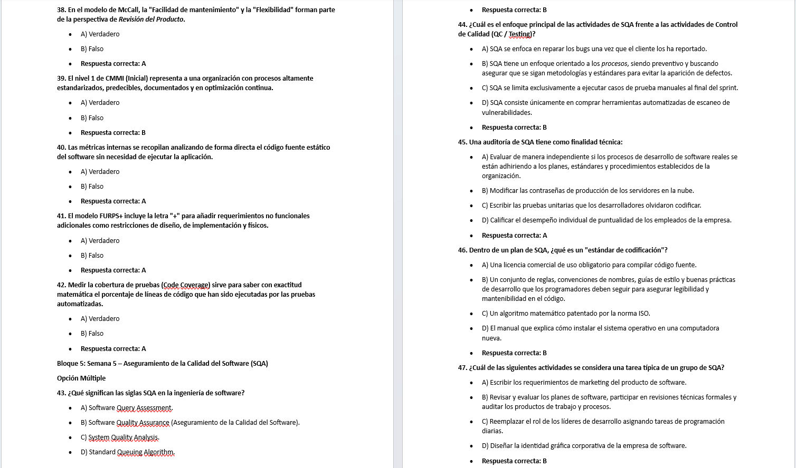
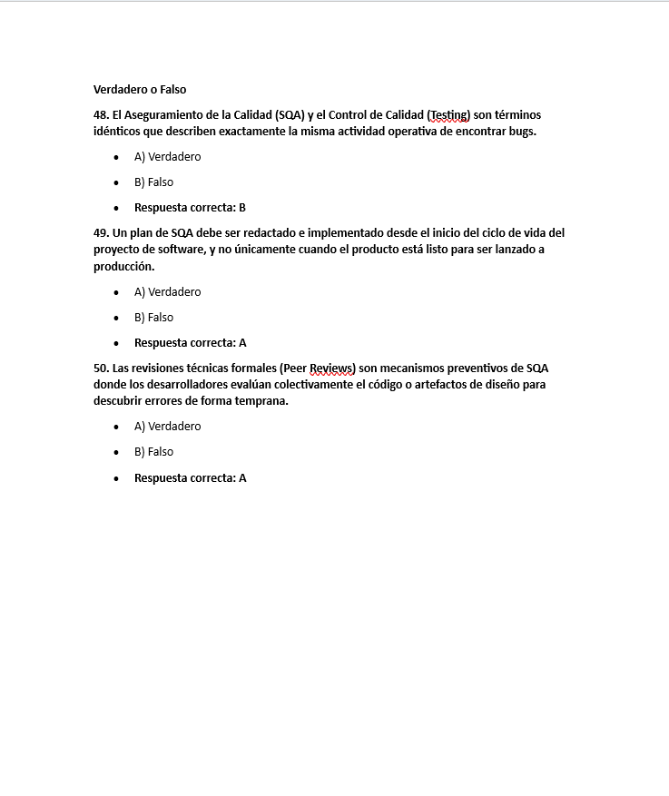

El SQA (Software Quality Assurance) es un conjunto de actividades planificadas y sistemáticas que garantizan que el software y sus procesos cumplan los requisitos y estándares de calidad establecidos.
Define cómo se asegurará la calidad del proyecto mediante actividades, responsables, herramientas, auditorías y métricas.
Las auditorías verifican que el equipo cumpla los procesos, estándares y requisitos establecidos.
Un defecto pasa por varias etapas: Nuevo → Asignado → Abierto → Resuelto → Verificado → Cerrado.
El SQA busca prevenir errores, mejorar los procesos y garantizar la calidad del software desde el inicio hasta la entrega final.
Evidencias de la corrección realizada.






Volver al cronograma